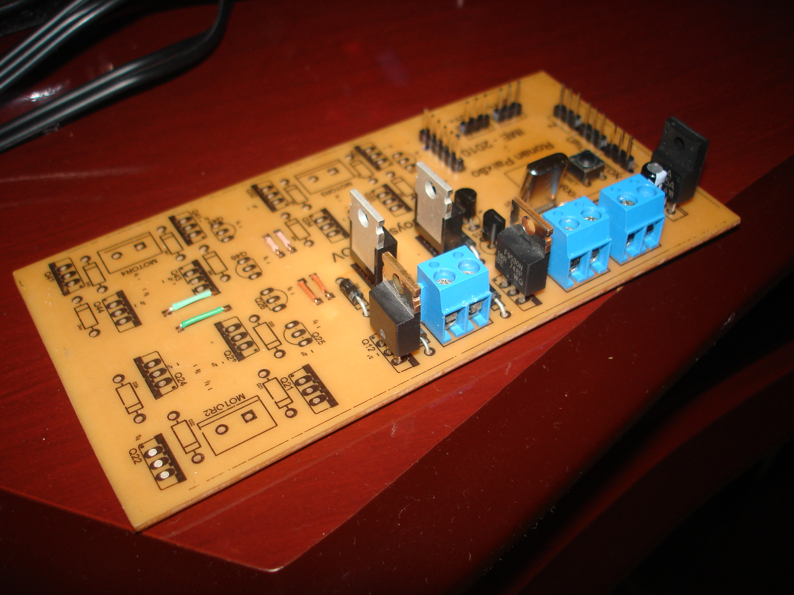
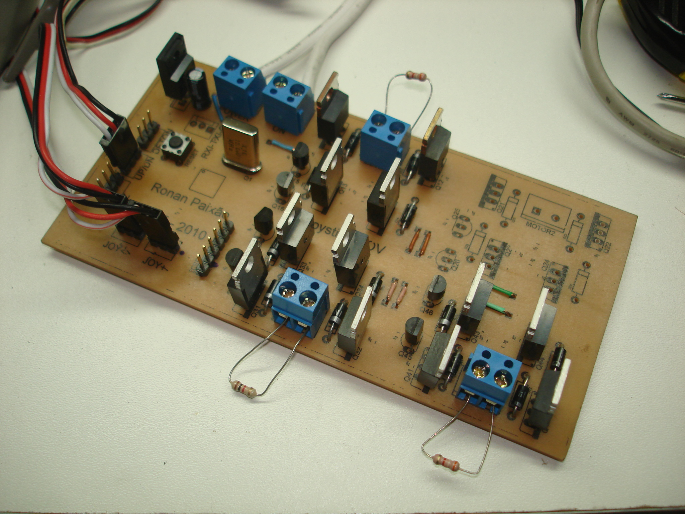

O veículo submersível (ROV, Remotely Operated Vehicle) é mais um dos projetos de alunos do Instituto Militar de Engenharia (IME), buscando o aperfeiçoamento dos conhecimentos de eletrônica, mecânica, robótica e outros.
Este projeto é desenvolvido pelo Laboratório de Sensoriamento Remoto, da Seção de Engenharia Nuclear (SE/7), e é apoiado pelo Laboratório de Robótica e Inteligência Computacional, da Seção de Engenharia de Computação (SE/8).
Neste projeto, fiquei encarregado de desenvolver um driver para os motores do ROV. Para isto, utilizei um microcontrolador ATMega8. Este é capaz de ler os sinais gerados pelos dois eixos de um joystick resistivo através de seu conversor analógico-digital (ADC), e o converte para um sinal diferencial para comandar os motores. Além disto, ele lê digitalmente dois dos botões do joystick, que são usados para o motor de subida e descida do veículo.
Com estas informações, o ATMega8 gera pulsos de PWM (Pulse Width Modulation) que, quando aplicados corretamente em cada lado do motor, gera uma corrente que o faz girar. O controle do sentido de rotação do motor, assim como sua conversão para estágio de potência, são feitos através de uma ponte-H com FETs de potência.
Placa para um motor:

Placa para 3 motores, com resistências de teste:

Por fim, não poderia deixar de haver um vídeo!